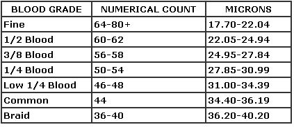

In the wild, members of the sheep family have two distinctly different coats: an outer one-consisting of long, coarse hair known as kemp-that protects the animal fromthe elements ... and an undercoat, called wool, which is soft and curly and keeps the creature warm. Domestication and selective breeding have eliminated most of the long hairs (although a few breeds, such as the Scottish Blackface, still sport abundant kemp), and today's sheep are covered almost exclusively with true wool. This remarkable natural fiber is distinguished by its fineness and scaly surface (which helps the strands hold together when spun or felted), its crimped or wavy appearance, its elasticity, its strength and durability, its effectiveness as an insulator, and its ability to absorb water and accept dyes.
In general, there are two classesof wool."apparel" and "carpet". Reeceofthe former type is finer and can be spun into a yarn suitable for clothing fabrics, while the latter is coarser and lends itself best to use in floor coverings or wall hangings.
When you evaluate a fleece, there are several things to look for. The first-and perhaps the most important-consideration is its weight.
This will depend upon the length, diameter, and densityofthe wool fibers...and these, in turn, vary with the breed, size, and health of the sheep. At the same time, the amount of extraneous material in the untreated fleece (which may account for half to three-quarters of its initial weight) must be determined.
Wool length can be anywhere from 1 to 20 inches. To check a fleece for length, gently part the fibers, hold them down smoothly with the flat of your hand, and measure from the skin out. Examine several areas, as the length varies on different partsofthe animal's body. The longest fibers are found in the britch (the area down the outsideofthe hind leg)...the next longest on the sheep's side . . . and? the shortest on the head.
The diameter ofthe wool fibers-which usually ranges between 0. 0007 and 0.002 inches, or between 17 and 40 microns (see the accompanying chart) is difficult to measure without special equipment, although visual examination and touch can give you some ideaofthe finenessofthe individual strands. An easier way to determine quality is to look at the crimp (the little S-shapes) in the strands. Crimps vary from 5 to 36 per inch: The more crimps, the finer the wool...and the finer the wool, the higher the quality. In fact, the character of a fleece is judged by the evenness, distinctiveness, overall uniformity, and numberofcrimps in the fibers.
Density refers to the number of wool fibers growing in a specific area of skin (such as a square inch) and will, of course, depend to some degree upon the diameter of the individual strands. The Merino sheep, with the finest wool, has about five times as many fibers per unit of skin area as does any other breed: Its wool is therefore the most dense. You can determine density by grasping the side wool to feel its fullness, orby simply parting the fleece to see how close together the fibers are. In addition to scoring well in the foregoing areas, a desirable fleece must have fibers with enough strength to be spun without breaking. if a sheep has had a bout with parasites or illness, or if its feed hasn't been nutritious enough, it may produce "tender wool" with fibers that break easily at a particular point.
Finally, after you've taken a good look at the wool to determine its length, diameter, density, character, and strength, you need to estimate how much extraneous matter will have to be removed. Grease wool is the term used to describe a shorn, unwashed fleece that contains many natural and acquired impurities. Among these contaminants are the yolk-consistingof woolgrease and suint-and sundry bitsofgrass, dust, dung, and even paint or sheep dip. Wool grease - or degras, as it is also called-is a natural, waxy coating composed chieflyofcholesterol. When purified, degras is the lanolin used in various ointments, unguents, and cosmetics. Suint is the sheep's equivalentofsweat-easily rinsed outofthe fleece-and is most likely the sourceofthe distinctive odor I call "essence de sheep". Handspinners would rather work with clean wool that hasn't had the lanolin removed, but commercial buyers must gauge the worthofa fleece according to its weight after all the impurities have been removed. As this process can result in a certain amountofshrinkage (up to 75% for a really dirty fleece!), the buyer must be highly trained and experienced in order to judge the cleaned weightofnewshorn wool accurately.
Once a fleece has been checked and appraised, it needs to be graded in some fashion. Three methods are used to classify wool: the bloodsystem, the numerical or spinning count system, and the micron system.
The blood system categorizes all wool, from the finest to the coarsest, into six market grades: [1] fine, [2] 1/2 blood, [3] 3/8 blood, [4] 1/4 blood, [5] low 1/4 blood, and [6] common and braid. These names originally referred to the amountofMerino blood in the sheep producing the wool, but today they refer simply to the finenessofthe wool...without any concern whatsoever for the amountofMerino blood present.
The numerical, or spinning count, system divides all wool into 14 grades. The numbers range from the 80's for the finest wool, down to 36 for the coarsest, and refer to the numberofhanks that can be spun from one poundofclean fibers.
Finally, the micron system rates wool by the average diameter-in microns, a measurement equal to 1/25,400inch-ofthe fibers in a given lot. Although it's technically more "accurate", its unitsofmeasure are difficult for the average person to visualize.
The chart below gives an ideaofhow these three systems compare.
|
 |
|
|